10 Analyse exploratoire des données
10.1 Introduction
Ce chapitre vous montre comment utiliser la visualisation et la transformation pour explorer vos données de manière systématique, une tâche que les statisticiens appellent analyse exploratoire des données, ou AED pour faire court. L’AED est un cycle itératif. Vous :
Générez des questions sur vos données.
Cherchez des réponses en visualisant, transformant et modélisant vos données.
Utilisez ce que vous apprenez pour affiner vos questions et/ou générer de nouvelles questions.
L’AED n’est pas un processus formel avec un ensemble strict de règles. Plus que tout, l’AED est une mentalité. Pendant les phases initiales de l’AED, vous devez vous sentir libre d’investiguer chaque idée qui vous vient à l’esprit. Certaines de ces idées porteront des fruits et certaines seront des impasses. À mesure que votre exploration se poursuit, vous vous concentrerez sur quelques intuitions particulièrement productives que vous finirez par exposer et communiquer à d’autres.
L’AED est une partie importante de toute analyse de données même si les questions de recherche principales vous sont données sur un plateau, car vous devez toujours investiguer la qualité de vos données. Le nettoyage des données n’est qu’une des applications de l’AED : il s’agit de se demander si vos données correspondent ou non à vos attentes. Pour faire du nettoyage des données, vous devez utiliser tous les outils de l’AED : visualisation, transformation et modélisation.
10.1.1 Prérequis
Dans ce chapitre, nous allons combiner ce que vous avez appris sur dplyr et ggplot2 pour poser des questions de manière interactive, y répondre avec les données, puis poser de nouvelles questions.
10.2 Questions
« Il n’y a pas de questions statistiques routinières, seulement des routines statistiques douteuses. » — Sir David Cox
« C’est bien mieux d’avoir une réponse approximative à la bonne question, qui est souvent vague, qu’une réponse exacte à la mauvaise question, qui peut toujours être précisée. » — John Tukey
Votre objectif lors de l’AED est de comprendre vos données. Le moyen le plus facile de le faire est d’utiliser des questions comme outils pour guider votre investigation. Quand vous posez une question, la question concentre votre attention sur une partie spécifique de votre jeu de données et vous aide à décider quels graphiques, modèles ou transformations faire.
L’AED est un processus créatif par définition. Et comme la plupart des processus créatifs, la clé pour poser des questions de qualité est de générer une grande quantité de questions. Il est difficile de poser des questions révélatrices au début de votre analyse car vous ne savez pas quelles intuitions peuvent être tirées de votre jeu de données. D’un autre côté, chaque nouvelle question que vous posez vous exposera à un nouvel aspect de vos données et augmentera vos chances de faire une découverte. Vous pouvez rapidement approfondir les parties les plus intéressantes de vos données—et développer un ensemble de questions intrigantes—si vous enchaînez chaque question par une nouvelle question basée sur ce que vous trouvez.
Il n’existe pas de règle sur les questions que vous devez poser pour guider votre recherche. Cependant, deux types de questions seront toujours utiles pour faire des découvertes dans vos données. Vous pouvez formuler ces questions en gros termes comme :
Quel type de variation se produit au sein de mes variables ?
Quel type de covariation se produit entre mes variables ?
Le reste de ce chapitre examinera ces deux questions. Nous expliquerons ce que sont la variation et la covariation, et nous vous montrerons plusieurs façons de répondre à chaque question.
10.3 Variation
La variation désigne la tendance des valeurs d’une variable à changer d’une mesure à l’autre. Vous pouvez voir la variation facilement dans la vie réelle ; si vous mesurez une variable continue deux fois, vous obtiendrez deux résultats différents. C’est vrai même si vous mesurez des quantités qui sont constantes, comme la vitesse de la lumière. Chacune de vos mesures inclura une petite quantité d’erreur qui varie d’une mesure à l’autre. Les variables peuvent aussi varier si vous mesurez entre différents groupes (p. ex., les couleurs des yeux de différentes personnes) ou à différents moments (p. ex., les niveaux d’énergie d’un électron à différents moments). Chaque variable a son propre modèle de variation, qui peut révéler des informations intéressantes sur la façon dont elle varie entre les mesures sur la même observation ainsi qu’entre les observations. Le meilleur moyen de comprendre ce modèle est de visualiser la distribution des valeurs de la variable, ce que vous avez appris en Chapitre 1.
Nous commencerons notre exploration en visualisant la distribution des poids (carat) d’environ 54 000 diamants du jeu de données diamonds. Puisque carat est une variable numérique, nous pouvons utiliser un histogramme :
ggplot(diamonds, aes(x = carat)) +
geom_histogram(binwidth = 0.5)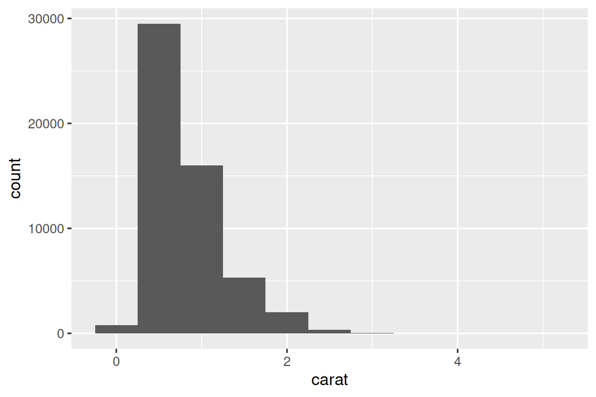
Maintenant que vous pouvez visualiser la variation, qu’est-ce que vous devez chercher dans vos graphiques ? Et quel type de questions supplémentaires devez-vous poser ? Nous avons rassemblé ci-dessous une liste des types d’informations les plus utiles que vous trouverez dans vos graphiques, ainsi que quelques questions supplémentaires pour chaque type d’information. La clé pour poser de bonnes questions supplémentaires est de suivre votre curiosité (Qu’est-ce que vous aimeriez apprendre de plus ?) ainsi que votre scepticisme (En quoi cela pourrait-il être trompeur ?).
10.3.1 Valeurs typiques
Dans les diagrammes en barres et les histogrammes, les barres hautes montrent les valeurs courantes d’une variable, et les barres plus courtes montrent les valeurs moins courantes. Les endroits qui n’ont pas de barres révèlent des valeurs qui n’ont pas été vues dans vos données. Pour transformer cette information en questions utiles, cherchez quelque chose d’inattendu :
Quelles sont les valeurs les plus courantes ? Pourquoi ?
Quelles sont les valeurs les plus rares ? Pourquoi ? Cela correspond-t-il à ce que vous attendiez ?
Pouvez-vous voir des patterns inhabituels ? Qu’est-ce qui pourrait les expliquer ?
Regardons la distribution de carat pour les diamants plus petits.
smaller <- diamonds |>
filter(carat < 3)
ggplot(smaller, aes(x = carat)) +
geom_histogram(binwidth = 0.01)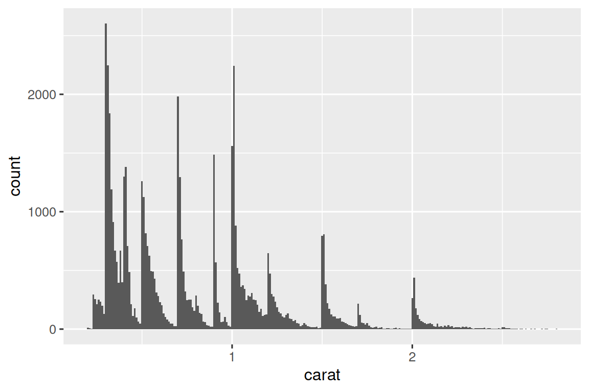
Cet histogramme suggère plusieurs questions intéressantes :
Pourquoi y a-t-il plus de diamants aux carats entiers et aux fractions courantes de carats ?
Pourquoi y a-t-il plus de diamants légèrement à droite de chaque pic que légèrement à gauche de chaque pic ?
Les visualisations peuvent aussi révéler des groupements, qui suggèrent que des sous-groupes existent dans vos données. Pour comprendre les sous-groupes, posez-vous les questions suivantes :
En quoi les observations au sein de chaque sous-groupe se ressemblent-elles ?
En quoi les observations dans des groupes séparés différent-elles les unes des autres ?
Comment pouvez-vous expliquer ou décrire ces groupes ?
Pourquoi la forme des groupes peut-elle être trompeuse ?
Certaines de ces questions peuvent être répondues avec les données tandis que d’autres nécessiteront une expertise du domaine sur les données. Beaucoup d’entre elles vous inviteront à explorer une relation entre les variables, par exemple, pour voir si les valeurs d’une variable peuvent expliquer le comportement d’une autre variable. Nous y arriverons bientôt.
10.3.2 Valeurs inhabituelles
Les valeurs aberrantes (outliers) sont des observations qui sont inhabituelles ; des points de données qui ne semblent pas correspondre à la tendance générale. Parfois, les valeurs aberrantes sont des erreurs de saisie, parfois ce sont simplement des valeurs extrêmes qui ont été observées dans cette collection de données, et d’autres fois, elles suggèrent des découvertes importantes. Quand vous avez beaucoup de données, les valeurs aberrantes sont parfois difficiles à voir dans un histogramme. Par exemple, considérez la distribution de la variable y du jeu de données diamonds. La seule preuve de valeurs aberrantes est les limites inhabituellement larges sur l’axe x.
ggplot(diamonds, aes(x = y)) +
geom_histogram(binwidth = 0.5)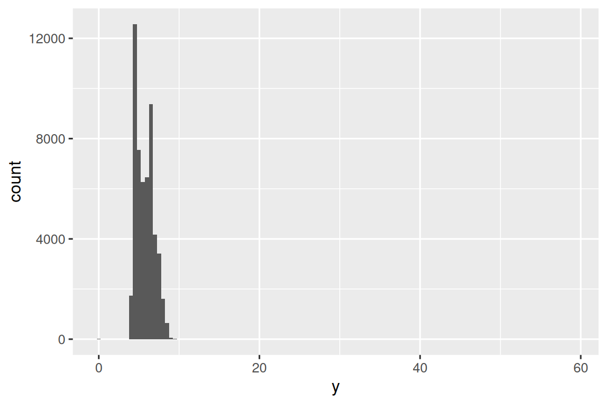
Il y a tellement d’observations dans les classes courantes que les classes rares sont très courtes, ce qui rend très difficile de les voir (peut-être que si vous regardez attentivement vers 0, vous verrez quelque chose). Pour faciliter la visualisation des valeurs inhabituelles, nous devons zoomer sur les petites valeurs de l’axe y avec coord_cartesian() :
ggplot(diamonds, aes(x = y)) +
geom_histogram(binwidth = 0.5) +
coord_cartesian(ylim = c(0, 50))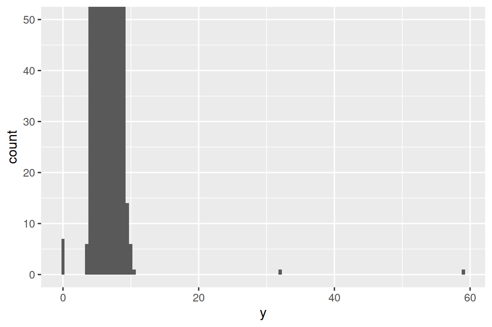
coord_cartesian() a aussi un argument xlim() pour quand vous avez besoin de zoomer sur l’axe x. ggplot2 a aussi les fonctions xlim() et ylim() qui fonctionnent légèrement différemment : elles suppriment les données en dehors des limites.
Cela nous permet de voir qu’il y a trois valeurs inhabituelles : 0, ~30 et ~60. Nous les extrayons avec dplyr :
unusual <- diamonds |>
filter(y < 3 | y > 20) |>
select(price, x, y, z) |>
arrange(y)
unusual
#> # A tibble: 9 × 4
#> price x y z
#> <int> <dbl> <dbl> <dbl>
#> 1 5139 0 0 0
#> 2 6381 0 0 0
#> 3 12800 0 0 0
#> 4 15686 0 0 0
#> 5 18034 0 0 0
#> 6 2130 0 0 0
#> 7 2130 0 0 0
#> 8 2075 5.15 31.8 5.12
#> 9 12210 8.09 58.9 8.06La variable y mesure l’une des trois dimensions de ces diamants, en mm. Nous savons que les diamants ne peuvent pas avoir une largeur de 0 mm, donc ces valeurs doivent être incorrectes. En faisant de l’AED, nous avons découvert des données manquantes qui ont été codées comme 0, que nous n’aurions jamais trouvées en cherchant simplement des NAs. À l’avenir, nous pourrions choisir de recoder ces valeurs comme NAs afin de prévenir les calculs trompeurs. Nous pourrions aussi soupçonner que les mesures de 32 mm et 59 mm sont improbables : ces diamants font plus d’un pouce de long, mais ne coûtent pas des centaines de milliers de dollars !
C’est une bonne pratique de refaire votre analyse avec et sans les valeurs aberrantes. Si elles ont un effet minimal sur les résultats et que vous ne pouvez pas comprendre pourquoi elles sont là, il est raisonnable de les omettre et de continuer. Cependant, si elles ont un effet significatif sur vos résultats, vous ne devriez pas les supprimer sans raison. Vous devrez comprendre ce qui les a causées (p. ex., une erreur de saisie) et documenter leur suppression dans votre rapport.
10.3.3 Exercices
Explorez la distribution de chacune des variables
x,yetzdansdiamonds. Qu’apprenez-vous ? Pensez à un diamant et à comment vous pourriez arbitrer quelle dimension est la longueur, la largeur et la profondeur.Explorez la distribution de
price. Découvrez-vous quelque chose d’inhabituel ou de surprenant ? (Indice : pensez à labinwidthet veillez à tester un large éventail de valeurs.)Combien de diamants pèsent 0,99 carat ? Combien en pèsent 1 carat ? Quelle est la cause de cette différence ?
Comparez et contrastez
coord_cartesian()par rapport àxlim()ouylim()lors du zoom dans un histogramme. Que se passe-t-il si vous ne définissez pasbinwidth? Que se passe-t-il si vous essayez de zoomer pour que seule la moitié d’une barre soit visible ?
10.4 Valeurs inhabituelles
Si vous avez rencontré des valeurs inhabituelles dans votre jeu de données et que vous voulez simplement continuer votre analyse, vous avez deux options.
-
Supprimez la ligne entière avec les valeurs étranges :
Nous ne recommandons pas cette option car une valeur invalide n’implique pas que toutes les autres valeurs pour cette observation sont aussi invalides. De plus, si vous avez des données de faible qualité, au moment où vous aurez appliqué cette approche à chaque variable, vous pouvez vous retrouver sans données !
-
À la place, nous recommandons de remplacer les valeurs inhabituelles par des valeurs manquantes. La façon la plus facile de le faire est d’utiliser
mutate()pour remplacer la variable par une copie modifiée. Vous pouvez utiliser la fonctionif_else()pour remplacer les valeurs inhabituelles parNA:
Il n’est pas évident de savoir où représenter graphiquement les valeurs manquantes, donc ggplot2 ne les inclut pas dans le graphique, mais il avertit qu’elles ont été supprimées :
ggplot(diamonds2, aes(x = x, y = y)) +
geom_point()
#> Warning: Removed 9 rows containing missing values or values outside the scale range
#> (`geom_point()`).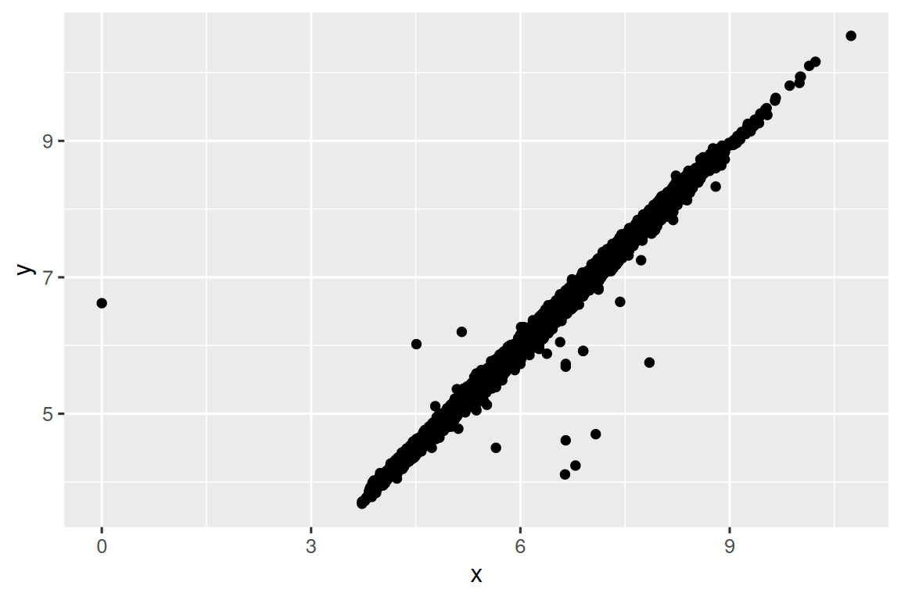
Pour supprimer cet avertissement, définissez na.rm = TRUE :
ggplot(diamonds2, aes(x = x, y = y)) +
geom_point(na.rm = TRUE)Parfois, on souhaite comprendre en quoi les observations comportant des valeurs manquantes diffèrent de celles dont les valeurs sont connues. Par exemple, dans nycflights13::flights1, les valeurs manquantes dans la variable dep_time indiquent que le vol a été annulé. Donc vous pourriez vouloir comparer les heures de départ prévues pour les vols annulés et non annulés. Vous pouvez le faire en créant une nouvelle variable, en utilisant is.na() pour vérifier si dep_time est manquante.
nycflights13::flights |>
mutate(
cancelled = is.na(dep_time),
sched_hour = sched_dep_time %/% 100,
sched_min = sched_dep_time %% 100,
sched_dep_time = sched_hour + (sched_min / 60)
) |>
ggplot(aes(x = sched_dep_time)) +
geom_freqpoly(aes(color = cancelled), binwidth = 1/4)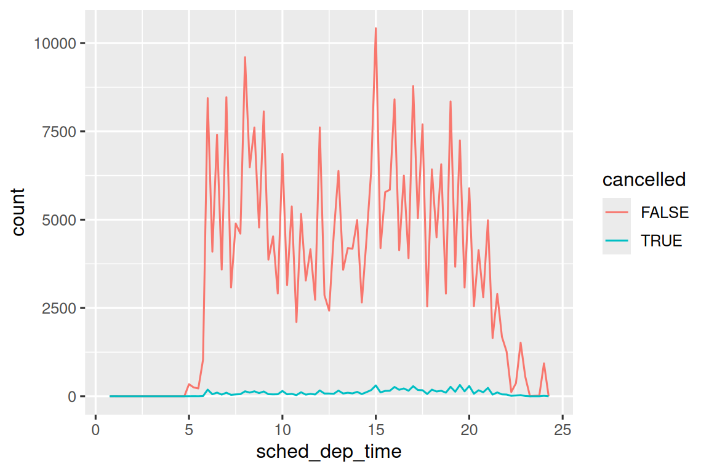
Cependant, ce graphique n’est pas très bon car il y a beaucoup plus de vols non annulés que de vols annulés. Dans la section suivante, nous explorerons quelques techniques pour améliorer cette comparaison.
10.4.1 Exercices
Que se passe-t-il avec les valeurs manquantes dans un histogramme ? Que se passe-t-il avec les valeurs manquantes dans un diagramme en barres ? Pourquoi existe-t-il une différence dans la façon dont les valeurs manquantes sont gérées dans les histogrammes et les diagrammes en barres ?
Recréez le graphique de fréquence de
scheduled_dep_timecoloré selon le fait que le vol ait été annulé ou non. Facettez également par la variablecancelled. Testez différentes valeurs pour la variablescalesdans la fonction de facettage pour atténuer l’effet du plus grand nombre de vols non annulés que de vols annulés.
10.5 Covariation
Si la variation décrit le comportement au sein d’une variable, la covariation décrit le comportement entre les variables. La covariation est la tendance des valeurs de deux ou plusieurs variables à varier ensemble de manière liée. Le meilleur moyen de détecter la covariation est de visualiser la relation entre deux ou plusieurs variables.
10.5.1 Une variable catégorique et une variable numérique
Par exemple, explorons comment le prix d’un diamant varie en fonction de sa qualité (mesurée par cut) en utilisant geom_freqpoly() :
ggplot(diamonds, aes(x = price)) +
geom_freqpoly(aes(color = cut), binwidth = 500, linewidth = 0.75)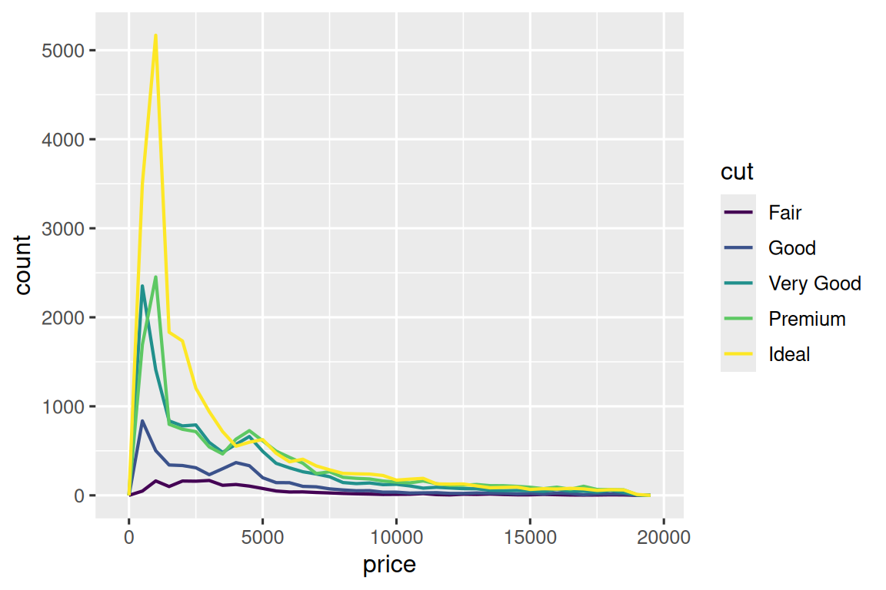
Notez que ggplot2 utilise une échelle de couleur ordonnée pour cut car elle est définie comme une variable facteur ordonnée dans les données. Vous en apprendrez plus sur celles-ci dans la Section 16.6.
L’apparence par défaut de geom_freqpoly() n’est pas très utile ici car la hauteur, déterminée par le dénombrement global, diffère beaucoup entre les cuts, ce qui rend difficile de voir les différences dans les formes de leurs distributions.
Pour faciliter la comparaison, nous devons changer ce qui est affiché sur l’axe y. Au lieu d’afficher le dénombrement, nous afficherons la densité, qui est le dénombrement standardisé de sorte que la surface sous chaque polygone de fréquence est égale à un.
ggplot(diamonds, aes(x = price, y = after_stat(density))) +
geom_freqpoly(aes(color = cut), binwidth = 500, linewidth = 0.75)
Notez que nous mappons la densité à y, mais puisque density n’est pas une variable dans le jeu de données diamonds, nous devons d’abord la calculer. Nous utilisons la fonction after_stat() pour le faire.
Il y a quelque chose d’assez surprenant dans ce graphique - il semble que les diamants Fair (la plus basse qualité) ont le prix moyen le plus élevé ! Mais peut-être que c’est parce que les polygones de fréquence sont un peu difficiles à interpréter - il se passe beaucoup de choses dans ce graphique.
Un moyen plus simple d’explorer cette relation est d’utiliser des boîtes à moustaches côte à côte.
ggplot(diamonds, aes(x = cut, y = price)) +
geom_boxplot()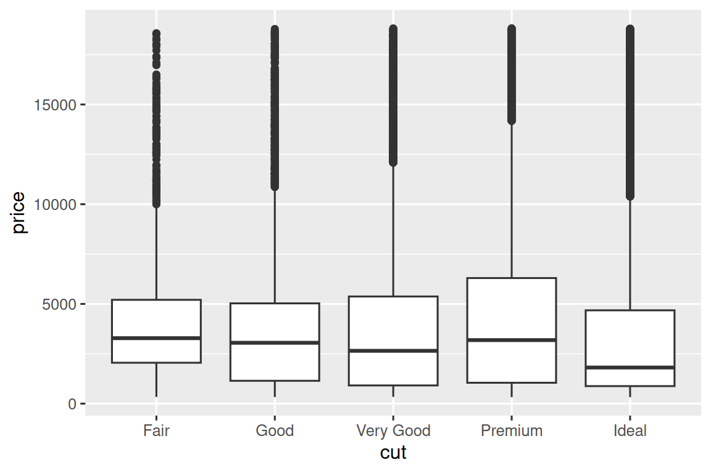
Nous voyons beaucoup moins d’information sur la distribution, mais les boîtes à moustaches sont beaucoup plus compactes, nous pouvons donc les comparer plus facilement (et en mettre plus sur un seul graphique). Cela soutient la découverte contre-intuitive que les diamants de meilleure qualité sont généralement moins chers ! Dans les exercices, vous serez mis au défi de comprendre pourquoi.
cut est un facteur ordonné : Fair est pire que Good, qui est pire que Very Good et ainsi de suite. De nombreuses variables catégoriques n’ont pas un tel ordre intrinsèque, vous pourriez donc vouloir les réorganiser pour créer un affichage plus informatif. Un moyen de le faire est d’utiliser la fonction fct_reorder(). Vous en apprendrez plus sur cette fonction dans la Section 16.4, mais nous voulons vous donner un aperçu rapide ici car elle est très utile. Par exemple, prenez la variable class dans le jeu de données mpg. Vous pourriez chercher à savoir comment le kilométrage sur autoroute varie selon les classes :
ggplot(mpg, aes(x = class, y = hwy)) +
geom_boxplot()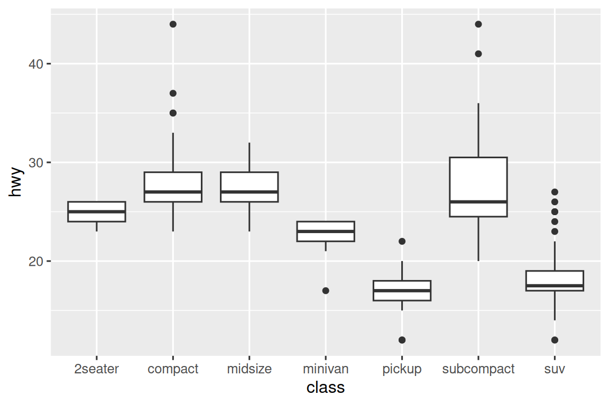
Pour faciliter la visualisation de la tendance, nous pouvons réorganiser class en fonction de la valeur médiane de hwy :
ggplot(mpg, aes(x = fct_reorder(class, hwy, median), y = hwy)) +
geom_boxplot()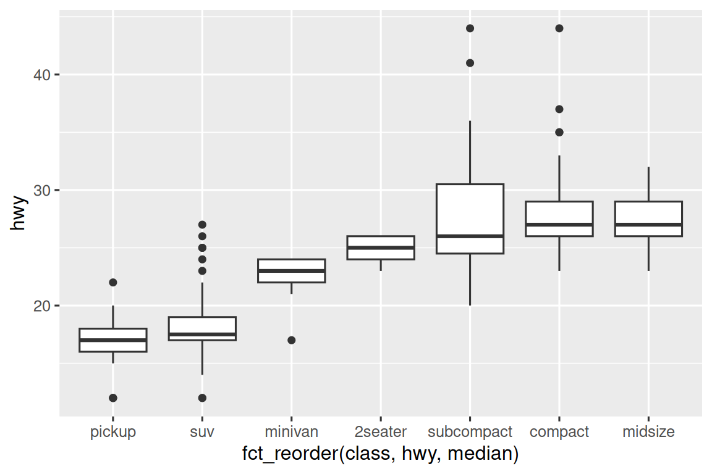
Si vous avez de longs noms de variables, geom_boxplot() fonctionnera mieux si vous le tournez à 90°. Vous pouvez le faire en échangeant les mappages esthétiques x et y.
ggplot(mpg, aes(x = hwy, y = fct_reorder(class, hwy, median))) +
geom_boxplot()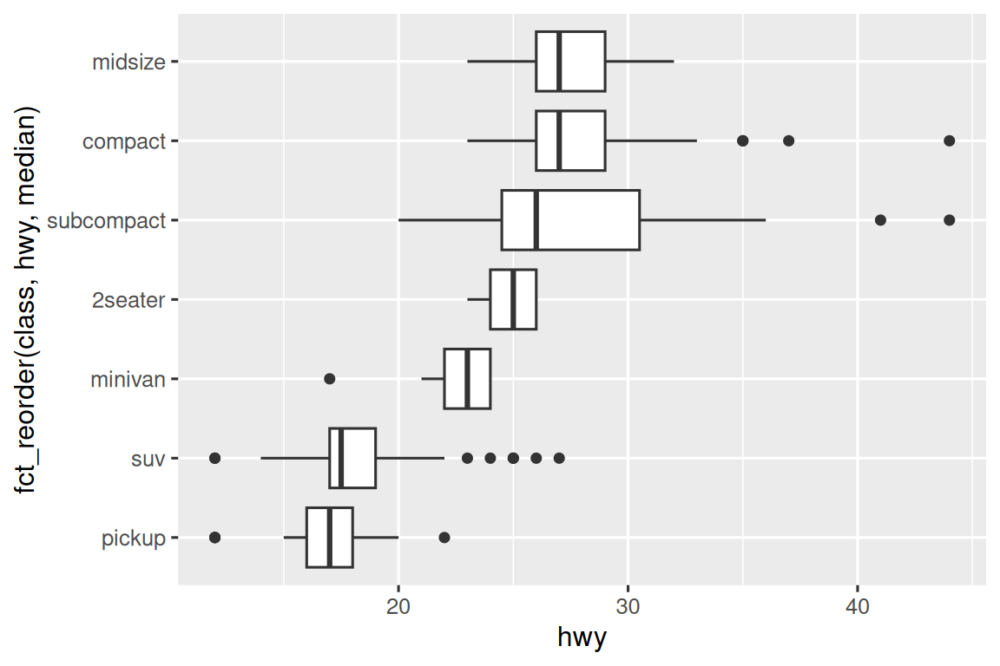
10.5.1.1 Exercices
Utilisez ce que vous avez appris pour améliorer la visualisation des heures de départ des vols annulés par rapport aux vols non annulés.
En fonction de l’AED, quelle variable du jeu de données diamonds semble être la plus importante pour prédire le prix d’un diamant ? Comment cette variable est-elle corrélée avec cut ? Pourquoi la combinaison de ces deux relations mène-t-elle à des diamants de plus basse qualité étant plus chers ?
Au lieu d’échanger les variables x et y, ajoutez
coord_flip()comme nouvelle couche à la boîte à moustaches verticale pour en créer une horizontale. En quoi cela diffère-t-il de l’échange des variables ?Un problème avec les boîtes à moustaches est qu’elles ont été développées à une époque de jeux de données beaucoup plus petits et ont tendance à afficher un nombre prohibitif de « valeurs aberrantes ». Une approche pour remédier à ce problème est le graphique à valeurs de lettres. Installez le package lvplot et essayez d’utiliser
geom_lv()pour afficher la distribution du prix par rapport à cut. Qu’apprenez-vous ? Comment interprétez-vous les graphiques ?Créez une visualisation des prix des diamants par rapport à une variable catégorique du jeu de données
diamondsen utilisantgeom_violin(), puis ungeom_histogram()facetté, puis ungeom_freqpoly()coloré, puis ungeom_density()coloré. Comparez et contrastez les quatre graphiques. Quels sont les avantages et les inconvénients de chaque méthode de visualisation de la distribution d’une variable numérique basée sur les niveaux d’une variable catégorique ?Si vous avez un petit jeu de données, c’est parfois utile d’utiliser
geom_jitter()pour éviter le surtraçage et voir plus facilement la relation entre une variable continue et une variable catégorique. Le package ggbeeswarm fournit un certain nombre de méthodes similaires àgeom_jitter(). Listez-les et décrivez brièvement ce que chacune fait.
10.5.2 Deux variables catégoriques
Pour visualiser la covariation entre les variables catégoriques, vous devez compter le nombre d’observations pour chaque combinaison de niveaux de ces variables catégoriques. Un moyen de le faire est de s’appuyer sur la geom_count() intégrée :
ggplot(diamonds, aes(x = cut, y = color)) +
geom_count()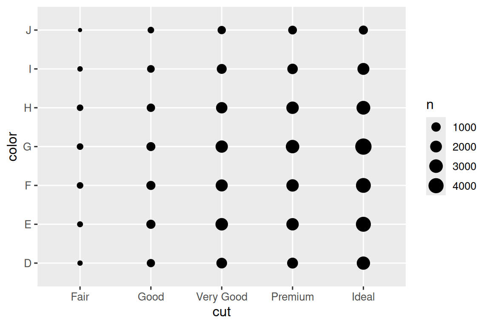
La taille de chaque cercle dans le graphique affiche le nombre d’observations qui se sont produites à chaque combinaison de valeurs. La covariation apparaîtra comme une forte corrélation entre des valeurs x spécifiques et des valeurs y spécifiques.
Une autre approche pour explorer la relation entre ces variables est de calculer les dénombrements avec dplyr :
diamonds |>
count(color, cut)
#> # A tibble: 35 × 3
#> color cut n
#> <ord> <ord> <int>
#> 1 D Fair 163
#> 2 D Good 662
#> 3 D Very Good 1513
#> 4 D Premium 1603
#> 5 D Ideal 2834
#> 6 E Fair 224
#> # ℹ 29 more rowsEnsuite, visualisez avec geom_tile() et l’esthétique fill :
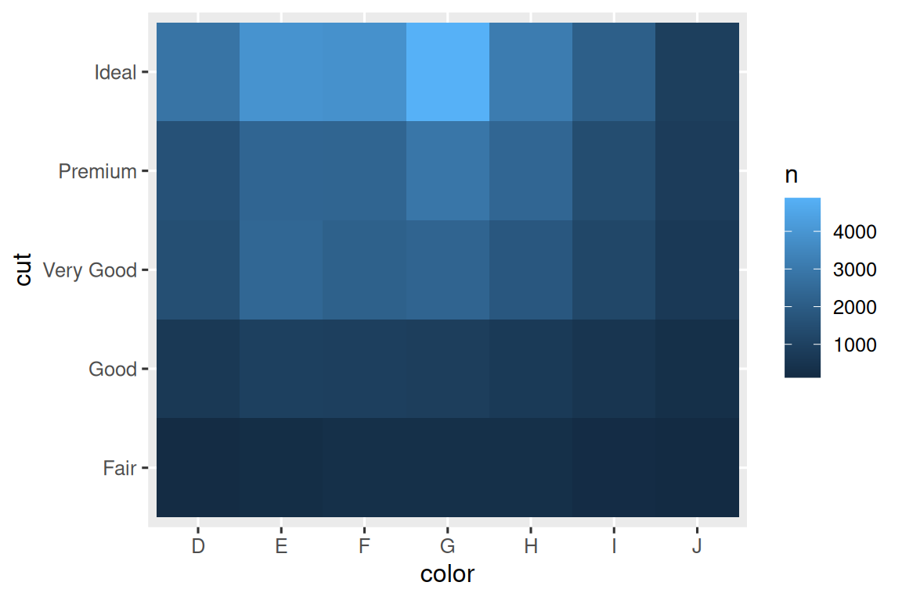
Si les variables catégoriques ne sont pas ordonnées, vous pourriez utiliser le package seriation pour réorganiser simultanément les lignes et les colonnes afin de révéler plus clairement les patterns intéressantes. Pour les graphiques plus grands, vous pourriez essayer le package heatmaply, qui crée des graphiques interactifs.
10.5.2.1 Exercices
Comment pourriez-vous mettre à l’échelle le jeu de données de dénombrement ci-dessus pour montrer plus clairement la distribution de cut au sein de color, ou color au sein de cut ?
Quelles intuitions de données différentes obtenez-vous avec un graphique en barres segmenté si color est mappée à l’esthétique
xetcutest mappée à l’esthétiquefill? Calculez les dénombrements qui tombent dans chacun des segments.Utilisez
geom_tile()avec dplyr pour explorer comment les retards moyens des départs des vols varient selon la destination et le mois de l’année. Qu’est-ce qui rend le graphique difficile à lire ? Comment pourriez-vous l’améliorer ?
10.5.3 Deux variables numériques
Vous avez déjà vu un excellent moyen de visualiser la covariation entre deux variables numériques : dessiner un nuage de points avec geom_point(). Vous pouvez voir la covariation comme un modèle dans les points. Par exemple, vous pouvez voir une relation positive entre le poids en carats et le prix d’un diamant : les diamants avec plus de carats ont un prix plus élevé. La relation est exponentielle.
ggplot(smaller, aes(x = carat, y = price)) +
geom_point()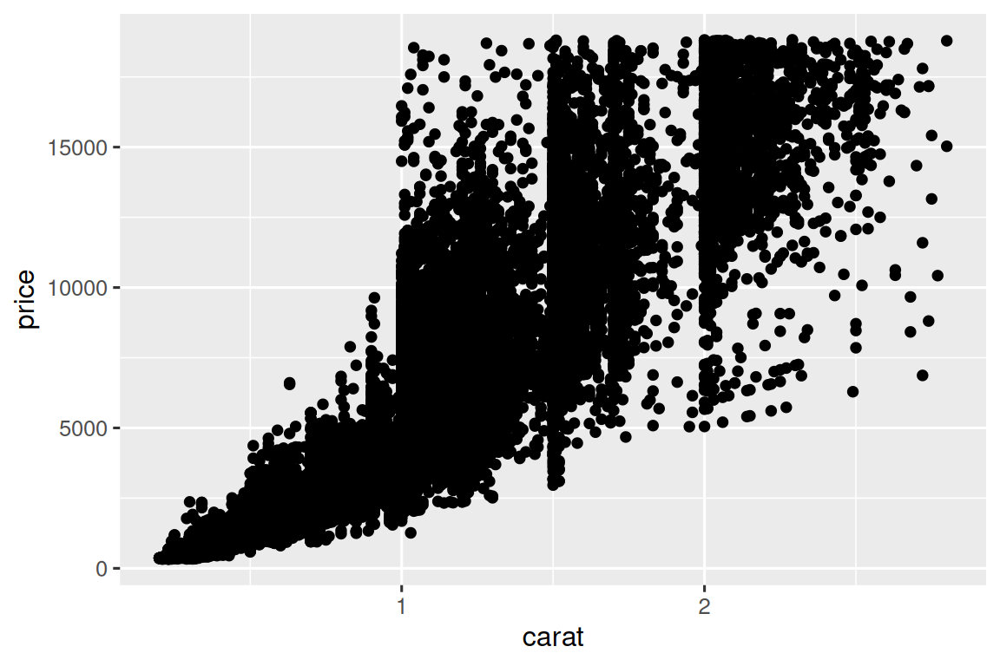
(Dans cette section, nous utiliserons le jeu de données smaller pour nous concentrer sur la masse des diamants qui pèsent moins de 3 carats)
Les nuages de points deviennent moins utiles à mesure que la taille de votre jeu de données augmente, car les points commencent à se chevaucher et s’entassent dans des zones de noir uniforme, ce qui complique la distinction de densité des données dans l’espace bidimensionnel ainsi que la détection de tendance. Vous avez déjà vu un moyen de résoudre le problème : utiliser l’esthétique alpha pour ajouter de la transparence.
ggplot(smaller, aes(x = carat, y = price)) +
geom_point(alpha = 1 / 100)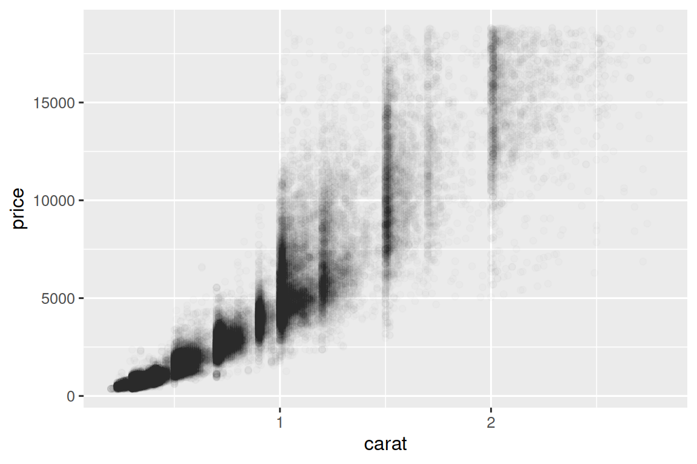
Mais utiliser la transparence peut être difficile pour les très grands jeux de données. Une autre solution est d’utiliser le regroupement par classes (bin). Précédemment, vous avez utilisé geom_histogram() et geom_freqpoly() pour classer dans une dimension. Maintenant, vous apprendrez comment utiliser geom_bin2d() et geom_hex() pour classer dans deux dimensions.
geom_bin2d() et geom_hex() divisent le plan des coordonnées en classes 2D, puis utilisent une couleur de remplissage pour afficher le nombre de points qui tombent dans chaque classe. geom_bin2d() crée des classes rectangulaires. geom_hex() crée des classes hexagonales. Vous devez installer le package hexbin pour utiliser geom_hex().
ggplot(smaller, aes(x = carat, y = price)) +
geom_bin2d()
#> `stat_bin2d()` using `bins = 30`. Pick better value `binwidth`.
# install.packages("hexbin")
ggplot(smaller, aes(x = carat, y = price)) +
geom_hex()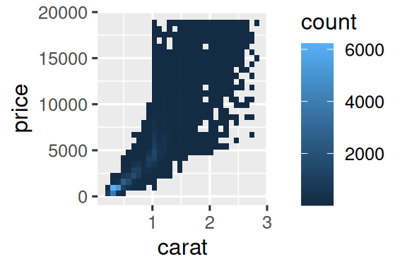
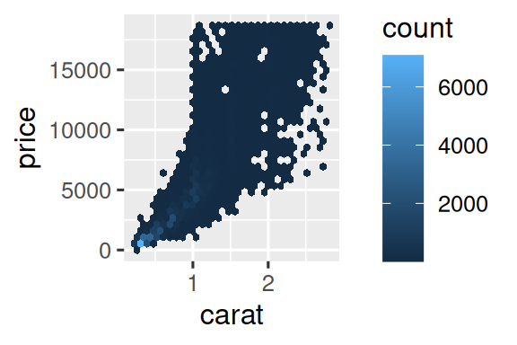
Une autre possibilité est de regrouper en classes une variable continue pour qu’elle agisse comme une variable catégorique. Ensuite, vous pouvez utiliser l’une des techniques de visualisation de la combinaison d’une variable catégorique et une variable continue que vous avez appris. Par exemple, vous pourriez regrouper en classes carat et puis pour chaque classe, afficher une boîte à moustaches :
ggplot(smaller, aes(x = carat, y = price)) +
geom_boxplot(aes(group = cut_width(carat, 0.1)))
#> Warning: Orientation is not uniquely specified when both the x and y aesthetics are
#> continuous. Picking default orientation 'x'.![Boîtes à moustaches côte à côte du prix par carat. Chaque boîte à moustaches représente les diamants qui sont 0,1 carats à part en poids. Les boîtes à moustaches montrent que à mesure que carat augmente, le prix médian augmente aussi. De plus, les diamants de 1,5 carats ou moins ont des distributions de prix asymétriques vers la droite, 1,5 à 2 ont des distributions de prix à peu près symétriques, et les diamants qui pèsent plus ont des distributions asymétriques vers la gauche. Les diamants moins chers et plus petits ont des valeurs aberrantes au bout supérieur, les diamants plus chers et plus grands ont des valeurs aberrantes au bout inférieur.](EDA_files/figure-html/unnamed-chunk-26-1.png)
cut_width(x, width), comme utilisé ci-dessus, divise x en classes de largeur width. Par défaut, les boîtes à moustaches se ressemblent à peu près (à part le nombre de valeurs aberrantes) quel que soit le nombre d’observations, il est donc difficile de dire que chaque boîte à moustaches résume un nombre différent de points. Un moyen de mettre en avant cela est de rendre la largeur de la boîte à moustaches proportionnelle au nombre de points avec varwidth = TRUE.
10.5.3.1 Exercices
Au lieu de résumer la distribution conditionnelle avec une boîte à moustaches, vous pourriez utiliser un polygone de fréquence. Qu’avez-vous besoin de considérer quand vous utilisez
cut_width()par rapport àcut_number()? Comment cela impacte-t-il une visualisation de la distribution 2D decaratetprice?Visualisez la distribution de
carat, partitionnée parprice.Comment la distribution des prix des très gros diamants se compare-t-elle aux petits diamants ? Est-ce comme vous l’attendiez, ou est-ce surprenant ?
Combinez deux des techniques que vous avez apprises pour visualiser la distribution combinée de cut, carat et price.
-
Les graphiques bidimensionnels révèlent les valeurs aberrantes qui ne sont pas visibles dans les graphiques unidimensionnels. Par exemple, certains points dans le graphique suivant ont une combinaison inhabituelle de valeurs
xety, ce qui fait ressortir des points aberrants même si leurs valeursxetysemblent normales quand elles sont examinées séparément. Pourquoi un nuage de points est-il plus adapté qu’un graphique regroupé pour ce cas ?diamonds |> filter(x >= 4) |> ggplot(aes(x = x, y = y)) + geom_point() + coord_cartesian(xlim = c(4, 11), ylim = c(4, 11)) -
Au lieu de créer des classes de largeur égale avec
cut_width(), nous pourrions créer des classes contenant à peu près un nombre égal de points aveccut_number(). Quels sont les avantages et les inconvénients de cette approche ?ggplot(smaller, aes(x = carat, y = price)) + geom_boxplot(aes(group = cut_number(carat, 20)))
10.6 Patterns et modèles
Si une relation systématique existe entre deux variables, elle apparaîtra comme un pattern (une tendance) dans les données. Si vous repérez un pattern, posez-vous les questions suivantes :
Ce pattern pourrait-il être dû au hasard (c.-à-d. chance aléatoire) ?
Comment pouvez-vous décrire la relation impliquée par le pattern ?
Quelle est la force de la relation impliquée par le pattern ?
Quelles autres variables pourraient affecter la relation ?
La relation change-t-elle si vous regardez les sous-groupes individuels des données ?
Les patterns dans vos données fournissent des indices sur les relations, c.-à-d. qu’ils révèlent la covariation. Si vous pensez à la variation comme un phénomène qui crée de l’incertitude, la covariation est un phénomène qui la réduit. Si deux variables covarient, vous pouvez utiliser les valeurs d’une variable pour faire de meilleures prédictions sur les valeurs de la seconde. Si la covariation est due à une relation causale (un cas spécial), vous pouvez utiliser la valeur d’une variable pour contrôler la valeur de la seconde.
Les modèles sont un outil pour extraire les patterns des données. Par exemple, considérez les données diamonds. Il est difficile de comprendre la relation entre cut et price, car cut et carat, et carat et price sont étroitement liés. Il est possible d’utiliser un modèle pour supprimer la relation très forte entre price et carat afin que nous puissions explorer les subtilités qui subsistent. Le code suivant ajuste un modèle qui prédit price à partir de carat, puis calcule les résidus (la différence entre la valeur prédite et la valeur réelle). Les résidus nous donnent une vue du prix du diamant, une fois que l’effet du carat a été supprimé. Notez qu’au lieu d’utiliser les valeurs brutes de price et carat, nous les transformons d’abord en logarithme puis nous ajustons un modèle aux valeurs logarithmiques obtenues. Ensuite, nous passons les résidus en exponentiel pour les remettre à l’échelle des prix bruts.
library(tidymodels)
diamonds <- diamonds |>
mutate(
log_price = log(price),
log_carat = log(carat)
)
diamonds_fit <- linear_reg() |>
fit(log_price ~ log_carat, data = diamonds)
diamonds_aug <- augment(diamonds_fit, new_data = diamonds) |>
mutate(.resid = exp(.resid))
ggplot(diamonds_aug, aes(x = carat, y = .resid)) +
geom_point()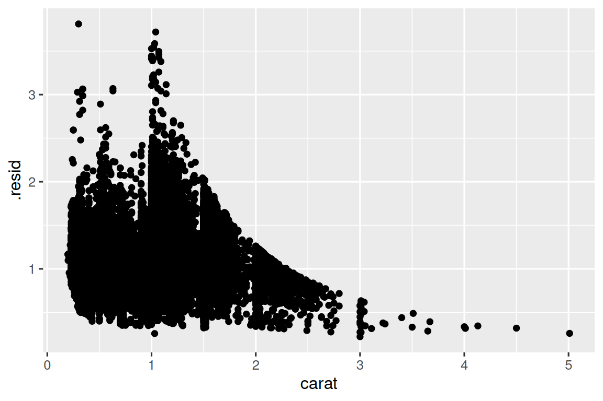
Une fois que vous avez supprimé la relation forte entre carat et price, vous pouvez voir la relation entre cut et price : par rapport à leur taille, les diamants de meilleure qualité sont plus chers.
ggplot(diamonds_aug, aes(x = cut, y = .resid)) +
geom_boxplot()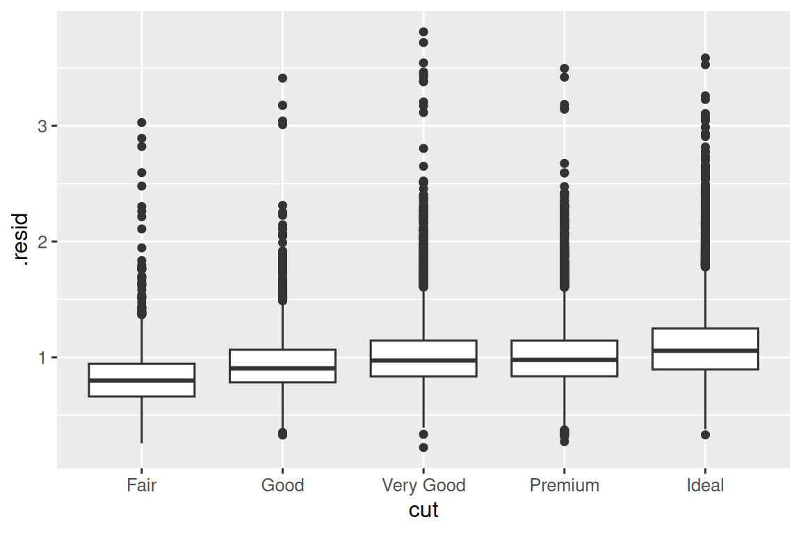
Nous ne discutons pas de la modélisation dans ce livre car comprendre ce que sont les modèles et comment ils fonctionnent est plus facile une fois que vous disposez d’outils de manipulation et de programmation des données.
10.7 Résumé
Dans ce chapitre, vous avez appris une variété d’outils pour vous aider à comprendre la variation au sein de vos données. Vous avez vu des techniques qui fonctionnent avec une variable à la fois et avec une paire de variables. Cela pourrait sembler restrictif si vous avez des dizaines ou des centaines de variables dans vos données, mais elles sont la fondation sur laquelle tous les autres outils sont construits.
Dans le chapitre suivant, nous nous concentrerons sur les outils que nous pouvons utiliser pour communiquer nos résultats.
Souvenez-vous que quand nous avons besoin d’être explicite sur le lieu de provenance d’une fonction (ou d’un jeu de données), nous utiliserons la forme spéciale
package::function()oupackage::dataset.↩︎